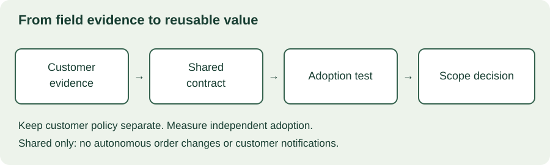

MODULE 04 · ADVANCED FIELD ENGINEERING
Harbor’s exception workbench is successful. Two other customers now want something similar, and your team proposes a universal integration framework. Before committing, distinguish a repeated customer problem from superficially similar requests. Reuse pays off only when other people can adopt, operate, and evolve the result without depending on its original author.
Learning objectives
- Identify recurring problems using evidence from deployments.
- Choose between documentation, a template, a shared component, and a product capability.
- Estimate engineering effort saved while accounting for adoption and maintenance.
- Define ownership, compatibility, migration, and support boundaries.
- Present a product-feedback brief with a bounded next experiment.
Allow 100–130 minutes. Prerequisites: Chapters 10, 14, and 15. Deliver an evidence matrix, reuse proposal, and adoption experiment. All companies and figures below are fictional.
20.1 Find the repeated problem
Start with work observed across engagements: repeated schema mapping, permission setup, deployment checks, investigation steps, or explanations. Record who performs the task, how often it occurs, the time consumed, and the cost of errors. Separate measured observations from customer requests and sales forecasts.
Three customers asking for “a dashboard” do not necessarily share a workflow. One needs a daily compliance export, another needs live incident triage, and a third needs a monthly performance review. Their screens may look alike while their freshness, permissions, and correctness requirements differ.
Collect examples of both commonality and variation. Ask whether the same acceptance test would make sense for each customer. If it would not, identify the narrower common behavior before designing an abstraction.
| Customer | Observed common task | Important variation | Evidence strength |
|---|---|---|---|
| Harbor | Validate incoming exception records | Warehouse-scoped access; batch files | Two deployments timed |
| Northstar | Validate incoming exception records | Streaming events; different timestamp semantics | One discovery interview |
| Meridian | Validate incoming exception records | Restricted network; customer-managed runtime | Prototype only |
This evidence supports exploring shared validation rules. It does not yet establish demand for a universal ingestion platform. Before calling the pattern proven, inspect real inputs and deployment constraints from the other customers.
20.2 Choose the smallest useful reusable artifact
Reuse can start with an investigation guide or a checklist. A template helps when the workflow is stable but implementation varies. A library helps when callers share behavior and can manage a dependency. A service adds runtime operations and access boundaries. A core product feature needs a product owner and an explicit support commitment.
| Artifact | Good fit | Cost to acknowledge |
|---|---|---|
| Guide or checklist | Repeated decisions and verification steps | Keeping instructions accurate |
| Template | Similar starting point, distinct implementations | Copies diverge; fixes do not propagate automatically |
| Shared component | Stable behavior behind an explicit interface | Versioning, compatibility, and integration testing |
| Managed service | Common capability with shared operations | Availability, tenancy, monitoring, and support |
| Product capability | Validated recurring need aligned with strategy | Roadmap trade-offs and long-term ownership |
Martin Fowler’s discussion of YAGNI argues against building speculative future capability; it does not mean abandoning code quality or the ability to change the design. Apply that distinction here: keep a clean boundary for known behavior without implementing every imagined customer variation.
20.3 Separate common behavior from customer policy

For Harbor, a shared validator might check required fields, identifier format, and timestamp parsing. Customer-specific mapping translates the customer’s source schema into that contract. Business policy decides which exceptions matter and who may review them. Keep these responsibilities explicit rather than hiding them in a growing set of customer-name conditionals.
Configuration is still a public interface. Define valid values, defaults, failure behavior, and compatibility. If a field changes meaning between customers, naming it identically does not create a shared semantic contract. Document units, timezone assumptions, missing values, and error categories.
Use representative fixtures from each supported shape, with approved synthetic or sanitized data. Never copy a customer’s secrets, identifiers, proprietary rules, or production records into a shared example without appropriate authorization. A reusable artifact should include safe sample data and instructions for supplying environment-specific settings.
20.4 Include the lifetime cost
Counting only the first implementation makes a shared component look artificially cheap. Include design, documentation, packaging, tests, adoption assistance, upgrades, support, and eventual retirement. Compare that effort with a credible baseline, such as improving the existing checklist, rather than assuming every future project starts from zero.
Google’s SRE book describes toil as operational work that is often manual, repetitive, automatable, and grows with service scale without creating lasting value. That concept helps identify repeated deployment work worth reducing. It does not make all customer interaction waste: discovery and judgment may create lasting value even when they take time.
The SRE workbook emphasizes identifying and quantifying toil before reducing it. For field work, track hands-on engineering time separately from elapsed customer time. Saving two engineering hours does not necessarily shorten a deployment by two hours if the critical delay is a customer approval.
20.5 Interactive prioritization lab
Estimate effort over a fixed planning horizon. All deployments below are assumed to occur within that horizon and to save the same amount of effort. The model excludes revenue, risk reduction, discounting, and calendar scheduling. It supports a discussion; it cannot rank every strategic investment.
Reuse effort model
Default example: 160 gross hours saved minus 32 adoption hours, 80 build hours, and 24 maintenance hours leaves 24 net hours saved. At 16 net hours per deployment, at least seven deployments cover the 104 fixed hours over this horizon. This is a deployment-count break-even estimate, not a payback date.
Try four deployments instead of eight: net savings become −40 hours. Then double maintenance effort. This sensitivity matters when demand is uncertain. A negative effort balance does not automatically reject a security or correctness improvement; describe those benefits separately and avoid disguising them as time savings.
20.6 Make adoption an acceptance test
Ask an engineer who did not build the artifact to use it in a realistic second environment. Give them the intended documentation and record where they need help. If the original author must explain hidden assumptions throughout, the artifact is not yet independently usable.
Test installation, configuration, supported inputs, invalid inputs, upgrade, rollback, and diagnosis. Include one variation that differs materially from the original engagement. A successful replay of Harbor’s demo proves less than a successful adoption under Meridian’s runtime constraints.
Measure adoption effort consistently. Include time spent reading, debugging, obtaining configuration, and seeking support. Track failures and abandoned attempts as well as successful installs. The target is useful deployment outcomes, not the number of repositories created or package downloads.
Scope decision
A second customer needs streaming ingestion, but only the record-validation contract has been confirmed as common. What is the strongest next step?
20.7 Define ownership before announcing availability
Name a maintainer, a support route, and a decision owner for breaking changes. State whether the artifact is an example, an experimental accelerator, or a supported capability. These labels should correspond to actual commitments: supported environments, response expectations, upgrade obligations, and how consumers receive security fixes.
A version number alone is insufficient. Describe which changes preserve compatibility, how consumers pin versions, and how long older versions are supported. If you change error codes or validation behavior, assess whether downstream workflows depend on the old behavior even when the function signature stays the same.
Plan migration and retirement. Keep an inventory of known adopters, publish upgrade instructions, and test rollback where feasible. Avoid making a private field-engineering package a silent production dependency with nobody assigned to maintain it.
20.8 Turn field evidence into product feedback
A useful product brief describes the problem and affected segment before proposing a feature. Include observed frequency, current workarounds, customer impact, deployment constraints, alternatives, and evidence quality. Distinguish a committed customer need from a hypothetical future sale.
Example product-feedback brief
Problem: Field teams repeatedly implement exception-record validation, with inconsistent error handling.
Evidence: Two timed Harbor deployments; discovery evidence from Northstar; prototype evidence from Meridian. Demand beyond Harbor remains uncertain.
Proposal: Pilot a documented validation contract with one independent adopter. Keep transport and customer business rules outside the component.
Decision requested: Approve a bounded experiment with an owner and review date, then decide whether to maintain an accelerator or propose a core capability.
Acceptance evidence: Correctness on agreed fixtures, successful independent adoption, measured support effort, and no unowned operational dependencies.
When product declines the feature, clarify the reasoning and the conditions that could change the decision. Update customer expectations without promising an unapproved roadmap. Field evidence informs prioritization; it does not create a delivery commitment by itself.
20.9 Reuse proposal workshop
Scenario: You have six weeks of engineering capacity. The team estimates 80 build hours, 20 hours saved per deployment, four adoption hours per deployment, and four maintenance hours monthly. Sales predicts eight deployments over six months, but only four have confirmed dates. Meridian requires a different runtime. No team has accepted ongoing ownership.
Spend 25–35 minutes recommending a next step. Compare four and eight deployments, explain the uncertainty, select the artifact boundary, define an independent adoption trial, and name the ownership decision needed before broader release. Address what you will tell the customer and what you will send to product.
Worked response outline
Propose a narrow validation pilot rather than an entire ingestion platform. Report −40 net hours for four deployments and +24 for eight, using the stated assumptions. Validate Meridian’s runtime early, then ask an independent engineer to adopt the component. Assign maintenance ownership before wider availability. Keep transport adapters and customer policy separate. Present the broader product opportunity with evidence gaps and a review date; do not promise a roadmap feature to customers.
| Rubric | Points |
|---|---|
| Evidence and variation analysis | 25 |
| Narrow artifact and explicit contract | 20 |
| Honest effort model and sensitivity | 20 |
| Adoption, ownership, and lifecycle | 25 |
| Clear decision and customer communication | 10 |
20.10 Verified resources
Primary-source articles checked October 28, 2026. Use these to challenge your assumptions, not as universal thresholds for investment.
- Google SRE: Eliminating Toil — distinguish lasting engineering work from recurring operational burden.
- Google SRE Workbook: Eliminating Toil — explore measurement and practical reduction of repeated work.
- Martin Fowler: YAGNI — examine the cost of speculative capability and the role of incremental design.
20.11 Knowledge check
20.12 Completion check
You can now distinguish a recurring problem from a premature platform idea, model adoption effort honestly, and define the conditions under which a field solution becomes a supported capability.
Field notes
Which repeated task deserves a shared artifact, and what evidence would persuade you not to build it?